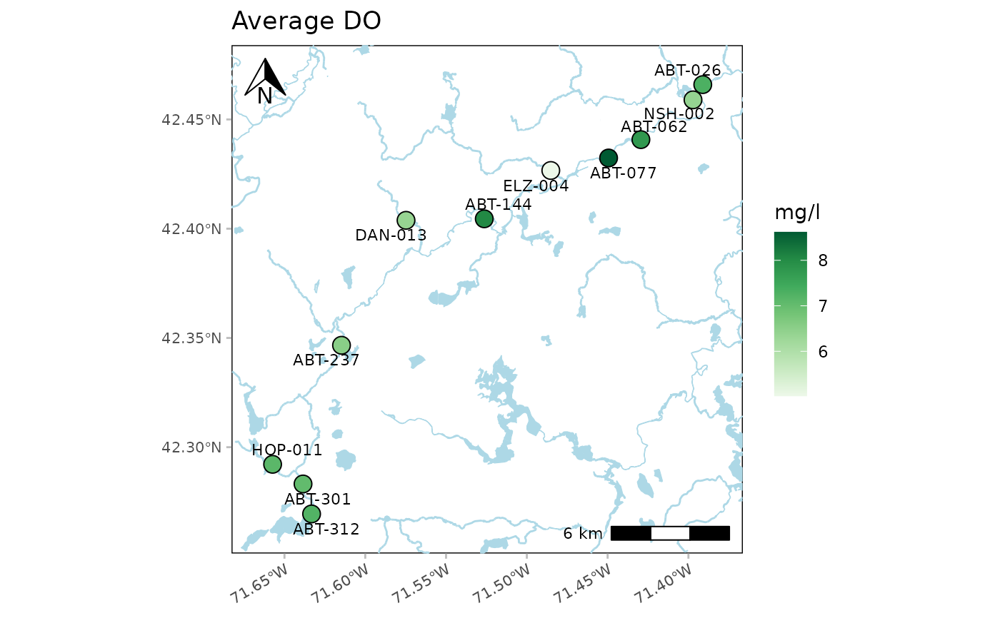
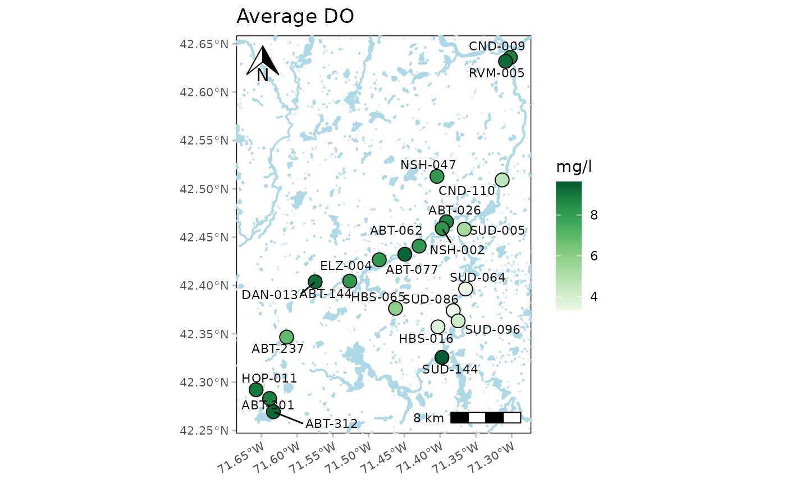

Analyze results with maps
Usage
anlzMWRmap(
res,
param,
acc,
sit,
site = NULL,
resultatt = NULL,
locgroup = NULL,
dtrng = NULL,
ptsize = 4,
repel = TRUE,
labsize = 3,
palcol = "Greens",
yscl = c("auto", "log", "linear"),
crs = 4326,
zoom = 11,
maptype = "terrain-background",
addwater = FALSE,
watercol = "lightblue",
buffdist = 0.02,
northloc = "tl",
scaleloc = "br",
latlon = TRUE,
runchk = TRUE,
warn = TRUE
)Arguments
- res
character string of path to the results file or
data.framefor results returned byreadMWRresults- param
character string of the parameter to plot, must conform to entries in the
"Simple Parameter"column ofparamsMWR- acc
character string of path to the data quality objectives file for accuracy or
data.framereturned byreadMWRacc- sit
character string of path to the site metadata file or
data.frameof site metadata returned byreadMWRsites- site
character string of sites to include, default all
- resultatt
character string of result attributes to plot, default all
- locgroup
character string of location groups to plot from the
"Location Group"column in the site metadata file, default all- dtrng
character string of length two for the date ranges as YYYY-MM-DD, default all
- ptsize
numeric for size of the points, use a negative value to omit the points
- repel
logical indicating if overlapping site labels are offset
- labsize
numeric for size of the site labels
- palcol
character string indicating the color palette to be used, see details
- yscl
character indicating one of
"auto"(default),"log", or"linear", see details- crs
numeric as a four-digit EPSG number for the coordinate reference system, see details
- zoom
numeric indicating resolution of the base map, see details
- maptype
character string for the base map type, see details
- addwater
logical indicating if water bodies are added to the map, see details
- watercol
character string of color for water objects if
addwater = TRUE- buffdist
numeric for buffer around the bounding box for the selected sites, see details
- northloc
character string indicating location of the north arrow, see details
- scaleloc
character string indicating location of the scale bar, see details
- latlon
logical to include latitude and longitude labels on the plot, default
TRUE- runchk
logical to run data checks with
checkMWRresults,checkMWRacc, orcheckMWRsites, applies only ifres,acc, orsitare file paths- warn
logical to return warnings to the console (default)
Value
A ggplot object that can be further modified.
Details
This function creates a map of summarized results for a selected parameter at each monitoring site. By default, all dates for the parameter are averaged. Options to filter by site, date range, and result attribute are provided. Only sites with spatial information in the site metadata file are plotted and a warning is returned for those that do not have this information. The site labels are also plotted next to each point. The labels can be suppressed by setting labsize = NULL.
Any acceptable color palette from RColorBrewer can be used for palcol, which is passed to the palette argment in scale_fill_distiller.
The default value for crs is EPSG 4326 for the WGS 84 projection in decimal degrees. The crs argument is passed to st_as_sf and any acceptable CRS appropriate for the data can be used.
The results shown on the map represent the parameter average for each site within the date range provided by dtrng. The average may differ depending on the value provided to the yscl argument. Log10-distributed parameters use the geometric mean and normally-distributed parameters use the arithmetic mean. The distribution is determined from the ycsl argument. If yscl = "auto" (default), the distribution is determined automatically from the data quality objective file for accuracy, i.e., parameters with "log" in any of the columns are summarized with the geometric mean, otherwise arithmetic. Setting yscl = "linear" or yscl = "log" will the use arithmetic or geometric summaries, respectively, regardless of the information in the data quality objective file for accuracy.
The base map is obtained from the get_stamenmap function. The zoom value specifies the resolution of the map. Use higher values to download map tiles with greater resolution, although this increases the download time. The maptype argument describes the type of base map to download. Acceptable options include "terrain", "terrain-background", "terrain-labels", "terrain-lines", "toner", "toner-2010", "toner-2011", "toner-background", "toner-hybrid", "toner-labels", "toner-lines", "toner-lite", or "watercolor". Use maptype = NULL to suppress the base map.
Using addwater = TRUE will include lines and polygons of natural water bodies from the OpenStreetMap (OSM) project, downloaded using the osmdata package. The downloaded objects are plotted as simple features on top of the base map specified with the maptype argument. Use maptype = NULL to show only the water objects.
The area around the summarized points can be increased or decreased using the buffdist argument. This creates a buffered area around the bounding box for the points, where the units are degrees.
A north arrow and scale bar are also placed on the map as defined by the northloc and scaleloc arguments. The placement for both can be chosen as "tl", "tr", "bl", or "br" for top-left, top-right, bottom-left, or bottom-right respectively. Setting either of the arguments to NULL will suppress the placement on the map.
Examples
# results data path
respth <- system.file('extdata/ExampleResults.xlsx', package = 'MassWateR')
# results data
resdat <- readMWRresults(respth)
#> Running checks on results data...
#> Checking column names... OK
#> Checking all required columns are present... OK
#> Checking valid Activity Types... OK
#> Checking Activity Start Date formats... OK
#> Checking Activity Start Time formats... OK
#> Checking for non-numeric values in Activity Depth/Height Measure... OK
#> Checking Activity Depth/Height Unit... OK
#> Checking values in Activity Depth/Height Measure > 1 m / 3.3 ft... OK
#> Checking Activity Relative Depth Name formats... OK
#> Warning: Checking Characteristic Name formats...
#> Characteristic Name not used for quality control: Air Temp, Gage
#> Checking Characteristic Name formats... WARNING
#> Checking Result Values... OK
#> Checking QC Reference Values... OK
#> Checking for missing entries for Result Unit... OK
#> Checking if more than one unit per Characteristic Name... OK
#> Checking acceptable units for each entry in Characteristic Name... OK
#>
#> All checks passed (1 WARNING(s))!
# accuracy path
accpth <- system.file('extdata/ExampleDQOAccuracy.xlsx', package = 'MassWateR')
# accuracy data
accdat <- readMWRacc(accpth)
#> Running checks on data quality objectives for accuracy...
#> Checking column names... OK
#> Checking all required columns are present... OK
#> Checking column types... OK
#> Checking for text other than <=, ≤, <, >=, ≥, >, ±, %, AQL, BQL, log, or all... OK
#> Checking Parameter formats... OK
#> Checking for missing entries for unit (uom)... OK
#> Checking if more than one unit (uom) per Parameter... OK
#> Checking acceptable units (uom) for each entry in Parameter... OK
#>
#> All checks passed!
# site data path
sitpth <- system.file('extdata/ExampleSites.xlsx', package = 'MassWateR')
# site data
sitdat <- readMWRsites(sitpth)
#> Running checks on site metadata...
#> Checking column names... OK
#> Checking all required columns are present... OK
#> Checking for missing latitude or longitude values... OK
#> Checking for non-numeric values in latitude... OK
#> Checking for non-numeric values in longitude... OK
#> Checking for positive values in longitude... OK
#> Checking for missing entries for Monitoring Location ID... OK
#>
#> All checks passed!
# map
anlzMWRmap(res = resdat, param = 'DO', acc = accdat, sit = sitdat)
#> Warning: No spatial information for sites: CND-036, HBS-031, HBS-057, HBS-057P, HBS-076, HBS-080P, HBS-085, HBS-088P, HBS-095P, HBS-098, LND-007, SUD-236, SUD-293

# map with OpenStreetMap water bodies
anlzMWRmap(res = resdat, param = 'DO', acc = accdat, sit = sitdat, addwater = TRUE)
#> Warning: No spatial information for sites: CND-036, HBS-031, HBS-057, HBS-057P, HBS-076, HBS-080P, HBS-085, HBS-088P, HBS-095P, HBS-098, LND-007, SUD-236, SUD-293
#> Coordinate system already present. Adding new coordinate system, which will replace the existing one.

# map with only OpenStreetMap water bodies
anlzMWRmap(res = resdat, param = 'DO', acc = accdat, sit = sitdat, addwater = TRUE,
maptype = NULL)
#> Warning: No spatial information for sites: CND-036, HBS-031, HBS-057, HBS-057P, HBS-076, HBS-080P, HBS-085, HBS-088P, HBS-095P, HBS-098, LND-007, SUD-236, SUD-293
#> Error in resp_abort(resp, error_body(req, resp)): HTTP 504 Gateway Timeout.